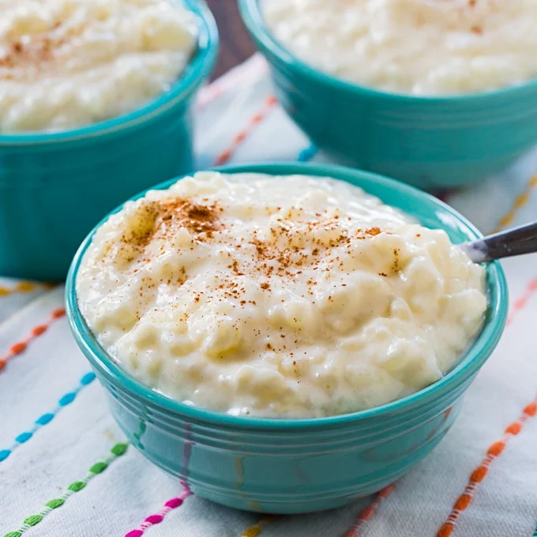

Description
This rice pudding will take you to another world with its sweetest and creaminess!
Sadly, one can not eat it after it is done cooking since it is served cold, but the wait is definitely worth it!
Ingredients
- 5 1/2 cups of whole milk
- 1/2 cup of whole milk, to use later
- 1/2 cup of sugar
- 1/2 teaspoon of salt
- 1/2 cup long grain white rice
- 2 teaspoons of vanilla extract
- 1 cinnamon stick
- ground cinnamon
Directions
- In a large saucepan, over medium-high heat, combine 5 1/2 cups of milk, sugar, salt, and cinnamon stick.
- Bring to a boil.
- Stir in rice and reduce heat to low to get it at a gentle simmer.
- Stir occasionally.
- Cook for 50 to 60 minutes. Mixture should have the consistency of yogurt.
- Once thickend, and rice is cooked, remove from heat and stir in vanilla.
- Let cook and then refrigerate.
- Stir in 1/2 a cup of milk just before serving.
- Sprinkle with cinnamon, if desired.
Tips
- If the rice is still uncooked, let it simmer for another 20 minutes. Time varies depending on how much longer the rice needs.
- If rice is still uncooked and it has reach the consistenct of yogurt, remove saucepan from heat, and cover with a lid for about 20 minutes.
- Can serve rice pudding on top of toasted bread
Return to Top
Go Home